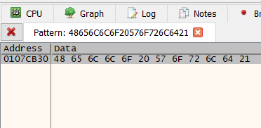
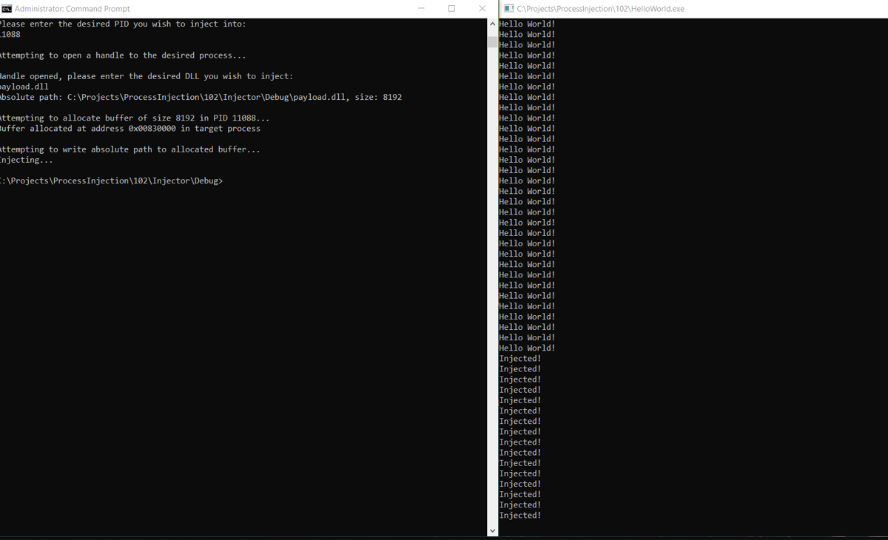

This blog post is a continuation of a series on Process Injection. To see part one click here!
The accompanying source files for this blog post are on GitHub.
Now that you have successfully run code in the address space of another process, it is time to make that actually code do something. Since HelloWorld.exe just prints Hello World! over and over again, let's change the string being printed.
While not necessary to follow this blog, it is useful to understand a little bit about Portable Executable (PE) files, which is the file format of Windows Executable files. The microsoft docs are here, and Corkami has some great visual resources.
Fire up 32-bit x64dbg and open up HelloWorld.exe (you can just drag it in), and hit run. x64dbg will stop at the entry point for you.
At this point you are done debugging 😄 press run again to allow the HelloWorld.exe to execute (The bottom left corner should say Running).
Open up the Memory Map tab and and press ctrl+b. A search window will pop up, allowing you to search for values in memory. Input Hello World! in the ASCII field:
After searching, one result should be returned - this is address of the string you want to change:

NOTE: The address you see will likely be different than the screenshot above! This is due to Address Space Layout Randomization (ASLR). ASLR randomizes the base address of HelloWorld.exe, but the offset of your target string from the base address HelloWorld.exe in memory will always be the same.
With this knowledge, note the address of the target string, in this example it is 0x0107CB30. Then return to the memory map and note the base address of HelloWorld.exe, in this case it is 0x01060000. The difference of 0x0107CB30 - 0x01060000 = 0x1CB30 gives you the offset of your target string. This offset will not change.
One more characteristic to note is that your target string is in a read-only portion of memory. The payload will have to account for this:
Create a new DLL in Visual Studio like you did in 101. This payload will only require 4 API calls to overwrite your target string:
HelloWorld.exe. This base address will be added to the offset 0x1CB30 to get the address of the target string*You should call VirtualProtect again at the end of our payload code to make the string read-only again. This just ensures you leave the program in as similar of a state as possible after modifying it.
These two lines should exist outside of the switch statement in DllMain, otherwise Visual Studio will complain undefined variables could be referenced within the switch.
// https://docs.microsoft.com/en-us/windows/win32/api/libloaderapi/nf-libloaderapi-getmodulehandlea
BYTE* stringAddr = (BYTE*)GetModuleHandle(TEXT("HelloWorld.exe")) + 0x1CB30;
LPVOID stringAddress = LPVOID(stringAddr);
Take note of the casting going on. This is necessary because you cannot do pointer arithmetic on a void pointer. Why? because C++ does not know the size of each unit of data being pointed at. Casting the pointer as a BYTE pointer allows C++ to know the arithmetic is adding 0x1CB30 to the pointer to move it 0x1CB30 bytes (size of 4 bits) forward. If that explanation didn't make any sense, try this Quora thread about it.
After the pointer arithmetic is done, you can cast the pointer back to LPVOID, which is what the other API calls expect as an argument.
Something else to note is that it is dangerous to overwrite data of length x with data of length > x. You might overwrite other data the program expects to be there for another purpose, akin to a buffer overflow. In this case the length of the target string is 0xE, so only make 0xE bytes writeable.
DWORD oldPerms;
// https://docs.microsoft.com/en-us/windows/win32/api/memoryapi/nf-memoryapi-virtualprotect
if (!VirtualProtect(stringAddress,
0xE, //Length of the string "Hello World!\n"
PAGE_EXECUTE_READWRITE,
&oldPerms //saves off the old permissions
)) {
printf("Error with VirtualProtect! %#010x", GetLastError());
exit(0);
}
// https://docs.microsoft.com/en-us/windows/win32/api/memoryapi/nf-memoryapi-writeprocessmemory
// https://docs.microsoft.com/en-us/windows/win32/api/processthreadsapi/nf-processthreadsapi-getcurrentprocess
if (!WriteProcessMemory( GetCurrentProcess(),
stringAddress,
"Injected!\n",
0xc,
NULL
)) {
printf("Error with VirtualProtect! %#010x", GetLastError());
exit(0);
}
DWORD finalPerms;
if (!VirtualProtect(stringAddress,
0xE,
oldPerms,
&finalPerms
)) {
printf("Error with VirtualProtect! %#010x", GetLastError());
exit(0);
}
Voila! You should be able to see the print statement now change when you inject your DLL into HelloWorld.exe:

As always you can check out the source for a completed payload on GitHub if you run into trouble.